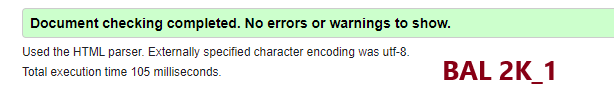

Walidacja HTML to proces sprawdzania poprawności kodu pod kątem błędów składniowych i zgodności ze specyfikacją języka.
Jest to ważny etap dla dostępności i wyświetlania zawartości stron internetowych. Walidacja może być wykonywana przez
narzędzia (walidatory) lub przez przeglądarki, które mają wbudowane funkcje walidacji formularzy.
Walidator to narzędzie któe pozwala na sprawdzenie poprawności kodu HTML i CSS pod kątem błędów składniowych i zgodności
ze specyfikacją języka. W przypadku wykrycia błędów, narzędzie podpowie, jakie zmiany należy wprowadzić w kodzie, aby usunąć błędy.


wróć